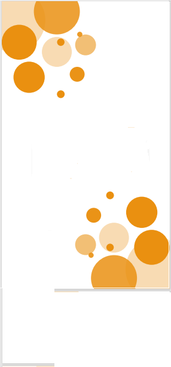

<ion-content >
  
  
  <ion-grid>
    <ion-row>
      <ion-col>
        <ion-card  [routerLink]="['/camara']" class="card">
          <ion-card-title class="ion-text-center">camara</ion-card-title>
          <ion-card-content>
            <ion-icon class="icono"  name="camera-outline"></ion-icon>
      
          </ion-card-content>
        </ion-card >
        <ion-card   [routerLink]="['/musica']"class="card">
          <ion-card-title class="ion-text-center">musica</ion-card-title>
          <ion-card-content>
            <ion-icon  class="icono" name="musical-notes-outline"></ion-icon>
          </ion-card-content>
        </ion-card>
  
      </ion-col>
      <ion-col>
        <ion-card [routerLink]="['/api']" class="card">
          <ion-card-content>
            <ion-card-title class="ion-text-center">fotos</ion-card-title>
            <ion-icon  class="icono" name="images-outline"></ion-icon>
          </ion-card-content>

        </ion-card>

        <ion-card [routerLink]="['/registro']" class="card">
          <ion-card-title class="ion-text-center">registrar</ion-card-title>
          <ion-card-content>
            <ion-icon  class="icono" name="person-add-outline"></ion-icon>
          </ion-card-content>
        </ion-card>

      </ion-col>
    
    </ion-row>
  </ion-grid>
  <div>

  </div>
  
</ion-content>
